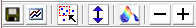

TrendTool for images
Introduction and Data View Window
In MIA_Toolbox and Solo+MIA, the Trendtool also works with images. With it, you can explore the layers of a multivariate image using spectral domain.
With Trend Tool, you set a marker (using the Marker button on the Marker Toolbar) then drag that marker and watch the corresponding Trend View to see the changes.
Markers can be set to measure:
- Height at Position - default setting, plots the value at a single maker. This is equivalent to extracting the image "layer" at the given variable.
- Integrated Area - sums all values between two markers.
- Peak Position - locates the maximum value between two markers.
- Peak Width - calculates full-width at half-height for the largest peak between two markers.
For all modes except "Height", the marker will split into two identically-colored markers and the two markers define the edges of the region to analyze.
The Trend spectrum can be adjusted with the Plot Controls or the Display Toolbar. See Trend Display Options below.
In addition, the Marker Toolbar contains buttons to automatically mark peaks (push-pin with the "A" label), flip the direction of the data's x-axis, and to update the Trend Display window.
Dragging Markers to Update Trends
Trend Display Options
The Image Toolbar allows manipulation of the displayed image: 
Buttons include (from left to right) :
- Save trend results - saves a DataSet object containing all the calculated results, including labels and axisscales, where appropriate.
- Spawn results plot - spawns a separate plot of the results which allows selection of individual results (rather than over-plotting all on one the single trend figure) Note that this spawned plot won't be updated when changes are made to the markers. A new plot must be spawned after marker changes.
- Select pixels - allows selection of a region in the image and plots the underlying data back in the TrendTool Data View (marker figure). This allows investigating the underlying data for specific regions of the image.
- AutoContrast Image - trims unusually high and low values (>3 standard deviations) from the image. This makes better use of the color scale to view image differences.
- Plot as Surface - enables/disables viewing the image as a 3D surface (height of surface = measured parameter). When enabled, use the Rotate 3D option in the top toolbar to grab and rotate the image.
- Decrease/Increase Interpolation - increases or decreases interpolation between pixels. Can improve visibility of features for low-resolution images in either 2D or 3D views.